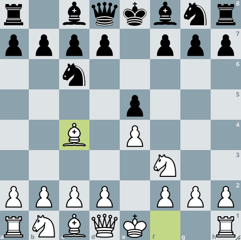
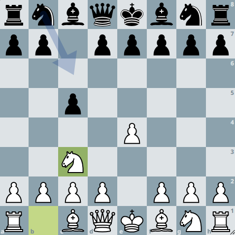
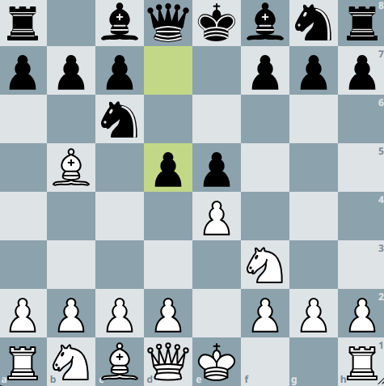
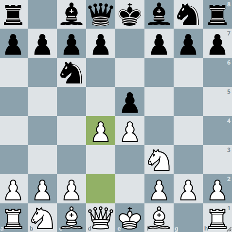
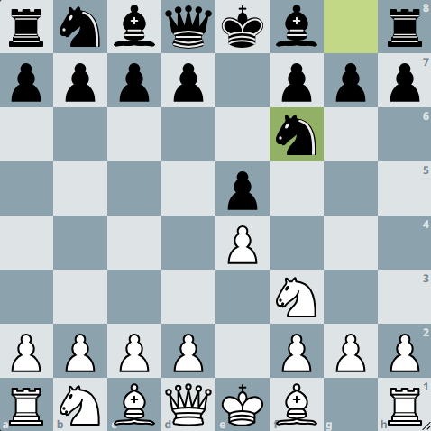
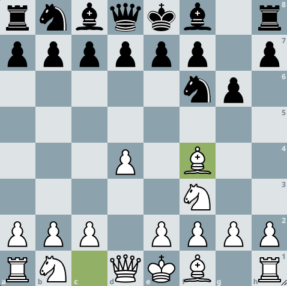

Les Ouvertures aux Échecs
Les ouvertures aux échecs sont les premiers coups joués au début d'une partie. Elles sont cruciales car elles établissent la position initiale des pièces et influencent le déroulement de la partie. Une bonne ouverture permet de contrôler le centre de l'échiquier, de développer les pièces rapidement et de garantir la sécurité du roi.
Principales Ouvertures :
- Ouverture Italienne
- Défense Sicilienne (Fermer)
- Gambit Dame
- Défense Française
- Ouverture Espagnole (Ruy Lopez)
- L'écossaise
- Petrov
- Caro Kan
- Scanidinave
- systeme de londre
Il est important pour les joueurs d'étudier et de pratiquer différentes ouvertures afin de s'adapter à divers styles de jeu et stratégies adverses.
L'Ouverture Italienne
L'Ouverture Italienne est l'une des ouvertures les plus anciennes et les plus populaires aux échecs. Elle commence par les mouvements 1.e4 e5 2.Nf3 Nc6 3.Bc4. Cette ouverture vise à contrôler le centre de l'échiquier tout en développant rapidement les pièces mineures.
Voici un lien vers une partie d'exemple utilisant l'Ouverture Italienne sur Lichess : Partie d'Exemple
Jouer: avec les blanc / à environ 900 ELO
Mouvements Initiaux

- e4
- e5
- Nf3
- Nc6
- Bc4
L'Ouverture Sicilienne (Fermer)
L'Ouverture Sicilienne est une défense populaire contre 1.e4, caractérisée par le mouvement 1...c5. Cette ouverture vise à contester le contrôle du centre tout en préparant un contre-jeu actif.
La variante fermée de la Sicilienne se développe souvent avec des mouvements comme 2.Nc3 et 3.g3, menant à des positions riches en stratégie.
Voici un lien vers une partie d'exemple utilisant l'Ouverture Sicilienne sur Lichess : Partie d'Exemple
Jouer: avec les Noir / En professionnel
Mouvements Initiaux

- e4
- e4
- c5
- Nc3
Le Gambit Dame
Le Gambit Dame est une ouverture classique qui commence par les mouvements 1.d4 d5 2.c4. En offrant un pion, les Blancs cherchent à contrôler le centre et à accélérer le développement de leurs pièces. Le Gambit Dame peut mener à des positions très dynamiques et offre de nombreuses possibilités stratégiques pour les deux camps.
Voici un lien vers une partie d'exemple utilisant Le Gambit Dame sur Lichess : Partie d'Exemple
Jouer: avec les blanc / à 1150 ELO
Mouvements Initiaux
La defence Française
La défense française est l'une des réponses noires les plus populaires contre le coup 1.e4. Elle figure au répertoire
des maîtres depuis le XIXème siècle, et reste une des armes favorites des joueurs positionnels. Elle mène souvent à des
parties assez lentes et constitue une option solide pour les joueurs de tous niveaux.
Voici un lien vers une partie d'exemple utilisant La defence française sur Lichess : Partie d'Exemple
Jouer: avec les noir / à 1600 ELO
Mouvements Initiaux
L' Ouverture Espagnole
La partie espagnole est une ouverture très populaire, jouée par les débutants comme par les champions du monde. Elle est
également parfois nommée Ruy Lopez en hommage à Ruy Lopez de Segura, moine espagnol du 16ème siècle, considéré comme le
joueur le plus brillant de son temps, qui a insisté sur son intérêt dans son ouvrage Libro del Ajedrez (1561)
.La partie espagnole a été profondément théorisée, et certaines lignes peuvent être analysées jusqu'au 30ème coup ! C'est
une ouverture pleine d'opportunités stratégiques et tactiques pour les blancs comme pour les noirs.
Voici un lien vers une partie d'exemple utilisant L'ouverture espagnole (Ruy_lopez) sur Lichess : Partie d'Exemple
Jouer: avec les blanc / à 700-1000 ELO
Mouvements Initiaux

- e4
- e5
- Nf3
- Nc6
- Bb5
- d5
L'Ouverture Ecossaise
La base de l'ouverture écossaise repose sur une idée simple mais efficace : un contrôle rapide et direct du centre de
l'échiquier.
Voici un lien vers une partie d'exemple utilisant La defence française sur Lichess : Partie
d'Exemple
Jouer: avec les blanc / à 1250 ELO
Mouvements Initiaux

- e4
- e5
- Nf3
- Nc6
- d4
La Petrov
La Défense Petrov (aussi appelé Défense Russe) est une ouverture que l'on voit rarement au niveau amateur, et encore
moins chez les scolaires car ce n'est souvent pas des parties très exitantes
Voici un lien vers une partie d'exemple utilisant La Petrov sur Lichess : Partie
d'Exemple
Jouer: avec les blanc et noir / à tout niveaux
Mouvements Initiaux

- e4
- e5
- Nf3
- Nf6
La Caro kann
La défense Caro-Kann est une ouverture aux échecs qui se caractérise par les coups 1. e4 c6. Elle doit son nom au joueur
anglais[note 1] Horatio Caro[note 2] et au théoricien viennois Marcus Kann[note 3] qui en commencèrent l'analyse en 1886
dans la revue allemande Brüderschaft
Voici un lien vers une partie d'exemple utilisant La Caro Kann sur Lichess : Partie
d'Exemple
Jouer: avec les noir / en professionnel
Mouvements Initiaux
La Scanidinave
La défense scandinave est la septième défense la plus populaire pour les noirs face au coup 1.e4.
Voici un lien vers une partie d'exemple utilisant La Scanidinave sur Lichess : Partie
d'Exemple
Jouer: avec les noir / à 600-800 ELO
Mouvements Initiaux
Le systeme de Londre
Le système de Londres est une ouverture du pion dame très populaire et à la réputation solide. On parle de système car
quelque soit les réponses des noirs, les blancs vont plus ou moins toujours placer leurs pièces de la même manière.
C'est pour cette raison que la théorie du système de Londres n'est pas aussi fournie que celles d'autres ouvertures.
Voici un lien vers une partie d'exemple utilisant La Scanidinave sur Lichess : Partie
d'Exemple
Jouer: avec les banc / à 1100-1300 ELO (même plus)
Mouvements Initiaux

- d4
- Nf6
- Nf3
- g6
- Bf4